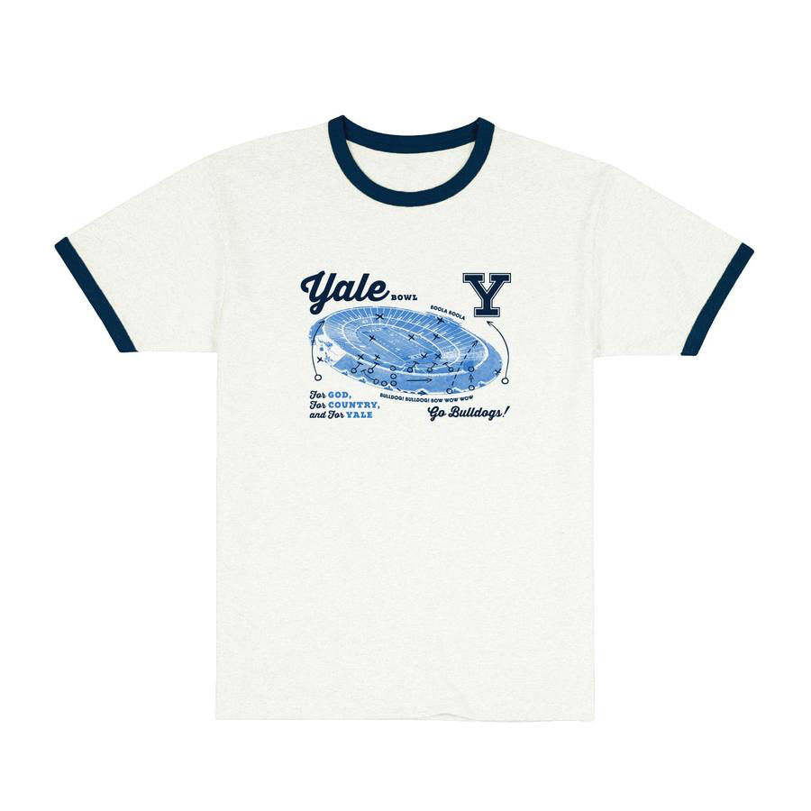

Shows the assistant using verified catalogue price and size stock rather than guessing.
Shows a hoodie search returning structured product cards that can open product detail pages.

Shows one selected usability improvement in the running Campus Customs app.